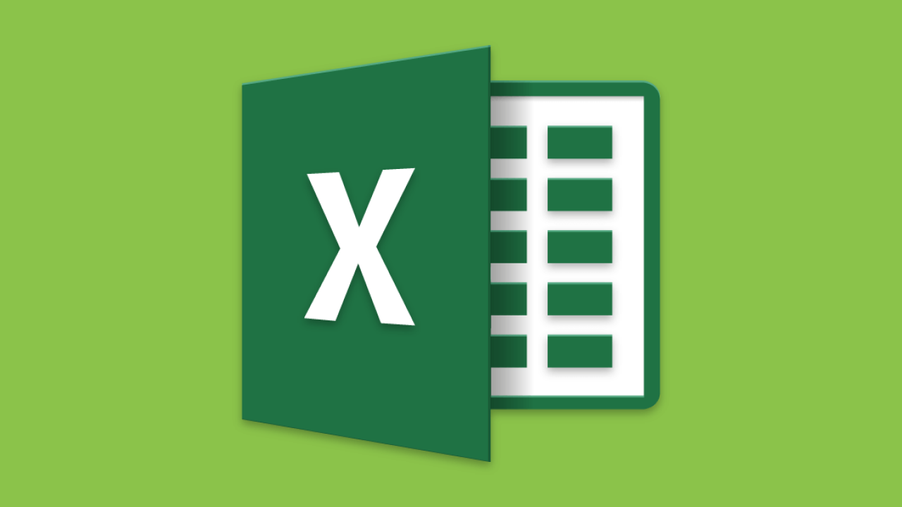
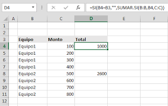

Microsoft Excel es una hoja de cálculo desarrollada por Microsoft para Windows, macOS, Android e iOS. Cuenta con cálculo, herramientas gráficas, tablas calculares y un lenguaje de programación macro llamado Visual Basic para aplicaciones.
¿Para que sirve?
Microsoft Office Excel es una hoja de cálculo que sirve para manejar datos numéricos o alfanuméricos agrupados en filas y columnas también llamadas tablas de datos. ... Con la ayuda del editor VBA de Excel se pueden programar macros. 
Funciones basicas
Entre las funciones basicas de Microsoft excel podemos encontrar sumas, restas, promedios, hasta funciones si